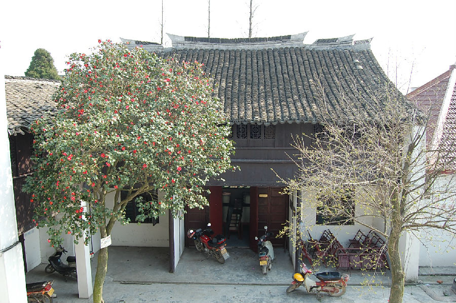

嘉兴市文物保护网 · 市级文物保护点 · 2020-11-09 · 原文

兴善寺柏家民居位于嘉兴市南湖区凤桥镇新民村兴善寺38号，新民村村委会内。据形制和村民介绍，判断为晚清民居建筑，二层砖木结构，方型走马堂楼式民居。坐南朝北，分五脊，两端微翘。南北向为主楼，九架梁，东西向厢房为五架梁，连接南北主楼。南北向二层主楼均为三开间，落地花格长窗，二层楼为裙板和花格窗。西向建筑外原有高大封火墙，辟有大铁门铆钉，文革期间被毁。露天大天井里栽有一棵树龄达120余年的山茶树。据当地村委会及村民介绍说，该房屋为当地大户人家建造，后有柏、沈两家居住，土改后归为当地房管所，80年代后为村委会办公场所一直至今。该民宅历史悠久，是新民村的历史建筑之一，柏家在当地较有影响，具有一定的历史、科学和艺术价值。2009年公布为市级文保点。